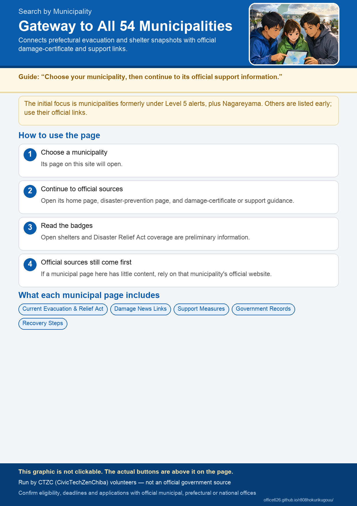

Find Your Municipality
Every municipality page includes a snapshot of evacuation information and shelter status from the Ishikawa, Toyama and Fukui Disaster Prevention Portal. Municipalities affected on the first day—including Nagareyama City—also include more detail on warnings and the Disaster Relief Act.
Affected on the First Day
Other Municipalities
No matching municipality was found.
